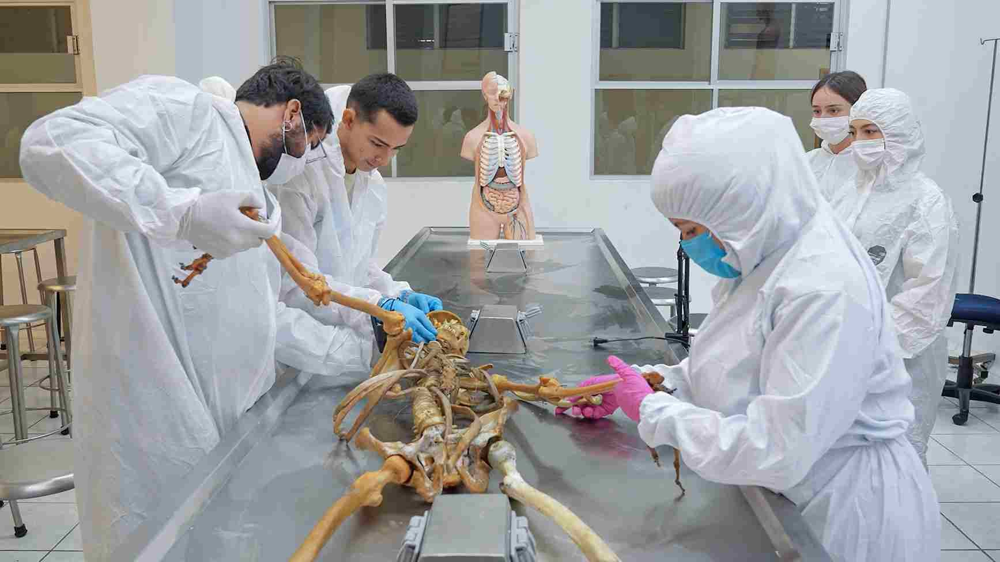

Criminologia

Conose el estudio del delito, sus causas y las formas de prevencion.
Explora la criminologia
El espacio para explorar la criminologia, la criminalistica
y las ciencias forenses
Hola mi nombre es Abril Perez Galvan, estudainte de la carrera de Desarrollo de Software
Multiplataforma de la universiada Tecnologica de Tula-Tepeji soy del grupo 4DSM-G2
y este es mi pequeño proyecto de la Materia de Aplicasiones web.
Elegi este tema por que me apasiona la criminologia y todo lo relacionado con el area forence.
Aunque actualmente estudio Desarrollo de Software Multiplataforma,
me encantria estuadiar esta carrera en el futuro y queria dar a conocer lo fascinante que es
este campo cinetifico
Mi gran ejemplo a seguir es Jessica Rojas, ya que es licenciada en Criminalística,
Derecho y Pedagogía, con una maestría en Métodos de Investigación Forense y especialidad
en Criminalística. Además, es técnica necropsista y técnica embalsamadora, dedicándose especialmente
al embalsamamiento, la realización de necropsias y la docencia.
Este portal contiene informacion sobre criminologia, criminalistica
y ciencias forenses. Cada una de estas areas tiene su propio enfoque y prespectiva.
La criminologia estudai el delito,sus causas y su prevencion. La criminalistica
analiza los indicios y las evidencias mediante metodos cientificos. Las ciencias forences
utilizan diferentes disciplinas cientificas para apoyar las investigaciones legales.
Conose el estudio del delito, sus causas y las formas de prevencion.
Explora la criminologia
¿Que hace?
Descubre como se estudian los indicios y las evidencias de una investigacion.

Aprende sobre las displinas cientificas que ayudan a las investigaciones legales
Explora mas las ciencias forenses
conose a profesionales inspiradores del mundo forense que
comparten su conosimineto, experiencia y pasion en el campo laboral
y en redes sociales.
Te invito a conocer a estas peronas asombrosas haz click para esplorar sus historias y trayectoria.
¿Tienes dudas, sugerencias o te gustaría saber más sobre las Ciencias Forenses? Completa el formulario a continuación y ponte en contacto con nosotros.